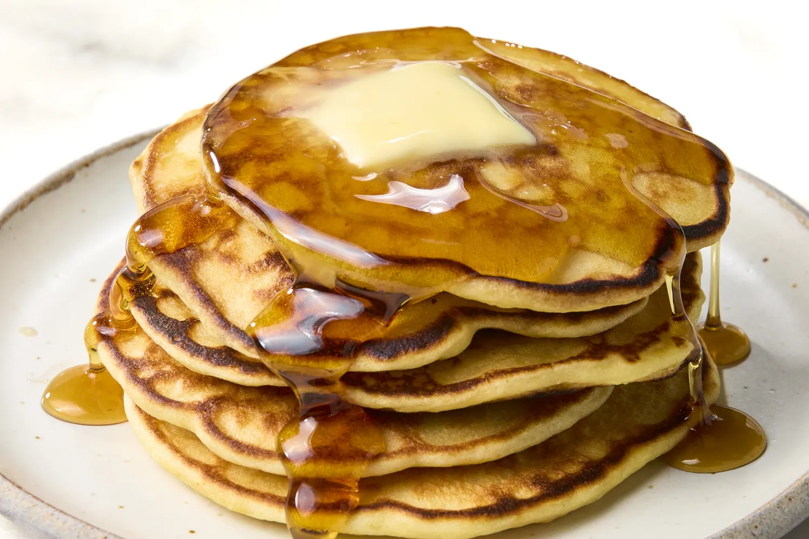

Pancake Recipe

Ingredients
- 100g Plain Flour
- 2 Large eggs
- 300ml milk
- 1 tbsp vegetable oil
- Caster Sugar
Cooking Steps
- Put 100g plain flour, 2 large eggs, 300ml milk, 1 tbsp sunflower or vegetable oil and a pinch of salt into a bowl or large jug, then whisk to a smooth batter. This should be similar in consistency to single cream.
- Set aside for 30 mins to rest if you have time, or start cooking straight away.
- Set a medium frying pan or crêpe pan over a medium heat and carefully wipe it with some oiled kitchen paper.
- When hot, cook your pancakes for 1 min on each side until golden, using around half a ladleful of batter per pancake. Keep them warm in a low oven as you make the rest.
- Once cold, you can layer the pancakes between baking parchment, then wrap in cling film and freeze for up to two months.